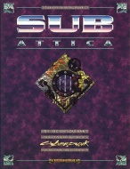

|  | Fiche technique |
| Supplément pour le jeu de rôles Cyberpunk 2020, édité par Ianus Games (Dream Pod 9) (1994) | |
| Langue | Anglais |
| Thème | Alternate Reality : une prison sous-marine |
| Qualité du background | 5 / 5 |
| Qualité des scénarii | 4 / 5 |
| Qualité des règles | 4 / 5 |
| Qualité des illustrations | 4 / 5 |
| Qualité de l'écriture | 5 / 5 |
Ce supplément fait partie des Alternate Realities comme Night's Edge, Grimm's Cybertales, Dark Metropolis et Blood Lust. Néanmoins, il change de ses pairs en présentant un lieu bien précis : Sub Attica, une prison sous-marine, le genre dont on ne s'évade pas. L'environnement sous-marin est très correctement décrit, et la prison est riche en possibilités d'aventure. Certaines inspis sont envisagés avec le côté surnaturel présenté dans les autres suppléments. Le background est cohérent, les règles sur les actions en milieu aquatique sont réalistes, un certain nombre de PNJs sont fournis, et le cadre est bien décrit. Autant l'avouer, j'ai trouvé ce supplément d'excellente qualité.
{kind=link}